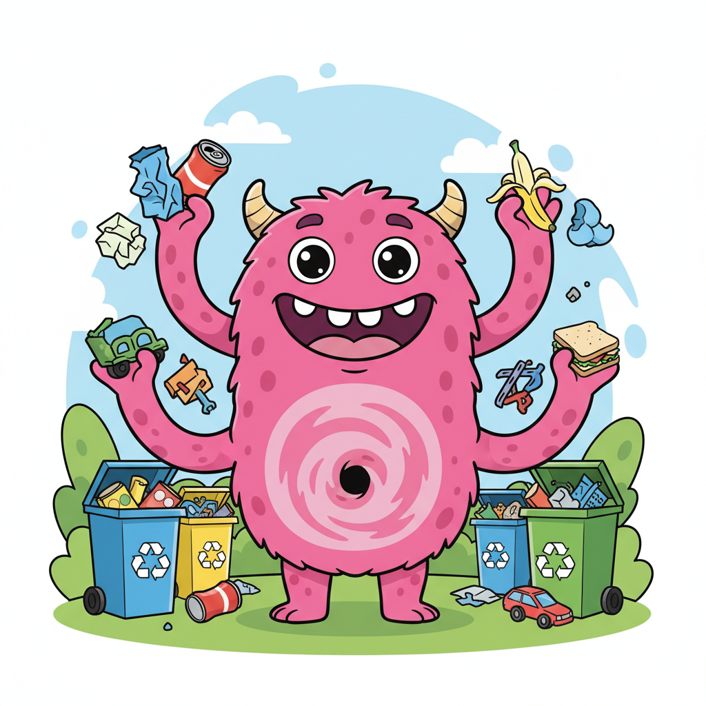

Nessa aula, houve uma introdução sobre os conteúdos que serão ensinados para os alunos e também tivemos que aplicar uma atividade diagnóstica para os alunos. Por fim, houve Kahoot valendo um prêmio para os 3 primeiros colocados Eu primeiramente, fui chamado junto com outra monitora para auxiliar nos corredores com a chegada dos alunos e indicá-los onde seria cada sala. Quando a aula começou, eu voltei para dentro da sala e permaneci em uma das fileiras. Durante a aula, eu ajudei alguns alunos a acessar o formulário diagnóstico, mas fora isso, nada muito importante aconteceu. Não teve tarefa, pois foi apenas atividade diagnóstica Eu preciso mudar o meu horário para quarta, senão eu não vou poder ir para a pré-incubadora. Me lembra disso, viu?